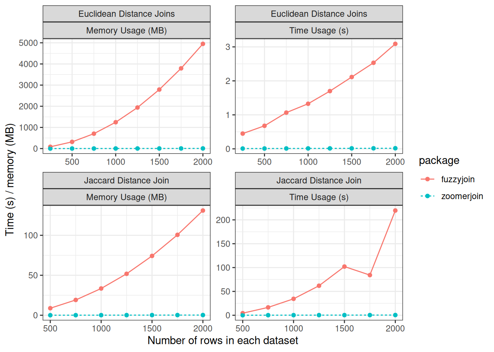

Introducing Zoomerjoin
If you work with large-scale social-science data, you are likely familiar with the concept of “fuzzy” merging which describes a process to merge data that is robust to minor misspellings or deviations between the keys used to identify observations between datasets. Fuzzy merging allows you to merge data even when fields have been inconsistently recorded or misspelled, as is common with large-scale administrative data.
However, there’s a catch: almost all popular fuzzy merging software packages take quadratic time, meaning they do not scale to large datasets. My new R package, Zoomerjoin, empowers you to fuzzily join datasets in linear time, allowing you to fuzzy join larger datasets than ever before.
Background:
Fuzzy matching is typically taken to mean identifying all pairs of observations between two datasets that have distance less than a specified threshold. Existing fuzzy-joining methods in R do not scale to large datasets as they exhaustively compare all possible pairs of units and recording all matching pairs, incurring a quadratic \(\mathcal{O}(mn)\) time cost. Perhaps worse, the most widely-used software packages typically also have a space complexity of \(O(mn)\), meaning that a patient user cannot simply wait for the join to complete, as the memory of even large machines will be quickly exhausted (Robinson 2020 ).
Zoomerjoin solves this problem by implementing two Locality-Sensitive Hashing algorithms (Broder 1997; Datar et al. 2004) which sort observations into buckets using a bespoke hash function which assigns similar entries the same key with high probability, while dissimilar items are unlikely to be assigned the same key. After this initial sorting step, the algorithm checks pairs of records in the same bucket to see if they are close enough to be considered a match. Records in different buckets are never compared, so the algorithm takes \(O(\max_{ij}{(m_i n_j)})\) time to run (time proportional to the size of the largest hash bucket). In the ordinary case that each observation matches to few points in another dataset, the running time is dominated by the hashing step, and the program finishes in linear time using linear memory.
How to use
If you are familar with the dplyr-style logical joins (such as inner_join),
you are already familiar with the syntax of Zoomerjoin.
Zoomerjoin supports fuzzy joining for two distance measures, the Jaccard
distance measure (for text data), and the Euclidean distance (for points or
vectors). You can perform a fuzzy-join using these distance metrics, you can
use jaccard_(operation)_join or euclidean_(operation)_join respectively.
To drive the point home, let me show off how easy it is to merge string data
using to use the jaccard_inner_join() function. I want to find matching rows
between two randomly-selected pools of political listed in the Database on
Ideology, Money in Politics, and Elections
(DIME).
Here’s the first ten rows of the first sample
corpus_1## # A tibble: 500,000 × 2
## id_1 field
## <dbl> <chr>
## 1 1 ufwa cope committee
## 2 2 committee to re elect charles e. bennett
## 3 3 montana democratic party non federal account
## 4 4 mississippi power & light company management political action and educ…
## 5 5 napus pac for postmasters
## 6 6 aminoil good government fund
## 7 7 national women's political caucus of california
## 8 8 minnesota gun owners' political victory fund
## 9 9 metropolitan detroit afl cio cope committee
## 10 10 carpenters legislative improvement committee united brotherhood of car…
## # ℹ 499,990 more rowsAnd the first ten rows of the second sample:
corpus_2## # A tibble: 500,000 × 2
## id_2 field
## <dbl> <chr>
## 1 832471 avrp studios inc
## 2 832472 avrd design
## 3 832473 avenales cattle co
## 4 832474 auto dealers of michigan political a
## 5 832475 atty & counselor at law
## 6 832476 at&t united way
## 7 832477 ashland food & liquors
## 8 832478 arvance turkey ranch inc
## 9 832479 arizona federation of teachers
## 10 832480 arianas restaurant
## # ℹ 499,990 more rowsEven after standardization, that the same donor may be spelled or recorded
differently in each dataset, so fuzzy joining is necessary. I use the
jaccard_inner_join function to find matching rows between the two samples:
start_time <- Sys.time()
join_out <- jaccard_inner_join(corpus_1, corpus_2,
by = "field",
threshold = .9, n_gram_width=6,
n_bands=40, band_width=6)
print(Sys.time() - start_time)## Time difference of 16.34204 secsselect(join_out, field.x, field.y) %>%
mutate_all(~substr(.x,1,30))## # A tibble: 7,803 × 2
## field.x field.y
## <chr> <chr>
## 1 "curl & stahl pc" "curl & stahl pc,"
## 2 "friends of kevin mccarthy for " "friends of kevin mccarthy for "
## 3 "electrical workers local 545" "electrical workers local 543"
## 4 "meredith donnell & abernethy p" "meredith donnell & abernethy p"
## 5 "lloyd gosselink blevins rochel" "lloyd gosselink blevins rochel"
## 6 "strasburger & price l.l.p." "strasburger & price l.l.p"
## 7 "union oil political awareness " "union oil political awareness "
## 8 "associated plumbing heating co" "associated plumbing heating co"
## 9 "the holman law firm p.c." "the holman law firm p.c.,"
## 10 "strategic land management cons" "strategic land management cons"
## # ℹ 7,793 more rowsThe join finishes in just a few seconds on a modern data science laptop, and uses very little memory, even though a brute-force comparison of all pairs would involve \(2.5^{11}\) operations! You can see a more detailed example of this vignette and more of what you can do with zoomerjoin in the introductory vignette, and package README.
Benchmarks
The industry standard is the venerable fuzzyjoin, which implements fuzzy
joins for a panoply of distance metrics. The package’s most commonly used fuzzy
joins, those for the string distance are backed by optimized C code used to
compare the strings. However, fuzzyjoin runs an exhaustive search between all
pairs of observations between each dataset, it has to perform an increasing
amount of work for each additional row it seeks to merge, and hence does not
scale to large datasets.

Zoomerjoin achieves almost linear scaling in both runtime and memory, while
fuzzyjoin scales quadratically in both quantities. Even for datasets with
2500 rows, zoomerjoin finishes in under a second. By contrast, the
Jaccard-distance joins implemented in fuzzyjoin take over three minutes to
join. For the largest Euclidean datasets, fuzzyjoin almost exhausts the 8GB
memory capacity of the laptop used for benchmarking, while zoomerjoin’s
memory rises above above 8 MB — a thousand-fold decrease. The slight
discontinuity from the bottom right panel seems to be a quirk of the benchmark
I am using.
Use Zoomerjoin For Blocking:
In many cases, a single distance metric will not be sufficient to distinguish matches from non-matches. As an example, it might be that multiple fields are needed to conclusively identify matches, or you might need to combine multiple string-distance metrics to properly distinguish different spellings of the same identifier from similar yet distinct identifiers.
Zoomerjoin can’t do this itself, but it can drastically cut down on the time needed to perform such matching by acting as a pre-processing step.
To do this, you can have Zoomerjoin return all pairs that are remotely similar, and then distinguish between matches and non-matches using a bespoke model. I can’t scoop some of the work I’m doing currently, but I can share that I have used Zoomerjoin as a pre-processing step to a machine-learning model to find credible matches in datasets with hundreds of millions of rows in a matter of minutes.